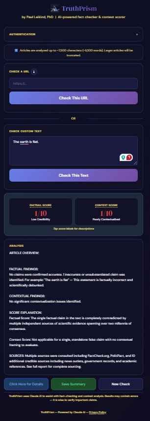

You share any article or claim
Paste a URL into the TruthPrism web app, or share directly from your iPhone using the iOS share sheet. TruthPrism works with virtually any news article, blog post, or text you can copy.
AI reads and extracts the key claims
TruthPrism's AI (powered by Claude from Anthropic) reads the full article and identifies the specific factual claims being made — separating opinion from assertion, and flagging statements that can be fact-checked against known information.
Claims are analyzed for accuracy and context
Each claim is evaluated for factual accuracy and the overall article is assessed for contextual completeness — whether it provides the full picture or omits important information that would change how a reader understands the story.
You get a clear, structured verdict
TruthPrism returns a Factual Score and a Context Score — each rated out of 10 — along with a plain-language summary of its findings. Tap Click Here for Details to expand a full in-depth report covering specific claims, contextual gaps, and sourcing. Both the summary and the detailed report can be saved for future reference. No jargon. No black box — just clarity.
